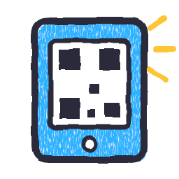

The photo is cut out on the phone; only the drawing goes to the relay. The mic, if on, is read for loudness only.
A first name and an age group, nothing more. No ads, no purchases, no chat. Room codes have no vowels, so they never spell words.
Every line Claude writes is checked for words that never suit ages 4 to 10. A hit swaps in a safe offline line. First names are checked too.
With AI personas off, no drawing from the room goes to Claude: every creature is made offline on the Mac.